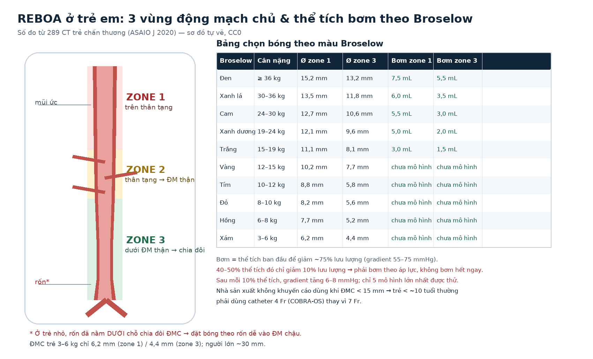
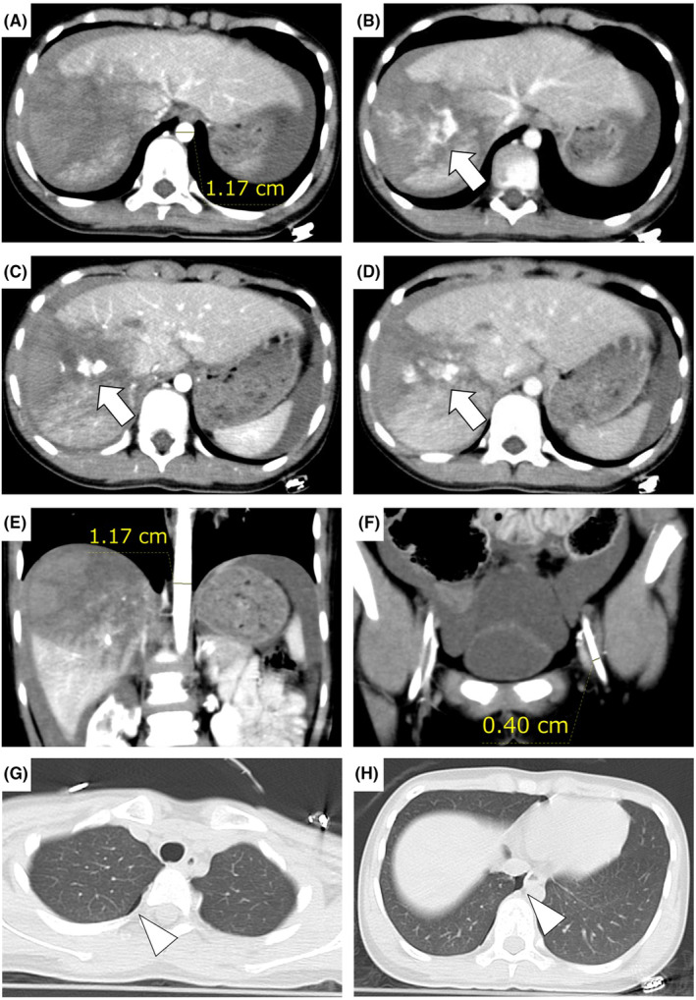

3064 — REBOA ở trẻ em: chọn cỡ bóng theo đường kính động mạch chủ, thể tích bơm và ngưỡng thời gian
Tags: pattern:soc-mat-mau pattern:chay-mau pattern:thoat-can-quang vung:dong-mach-chu-bung vung:dong-mach-chu-nguc anatomy:dong-mach-chu protocol:REBOA protocol:CTA protocol:SA-Doppler score:Broselow incidentaloma:khong
Mức chắc chắn (certainty): tổng hợp y văn (literature synthesis) — ghép mô hình giải phẫu–huyết động trên 289 CT trẻ chấn thương (ASAIO J 2020, PMC6856426), 11 ca REBOA < 18 tuổi trong AAST AORTA registry (Injury 2020, PMC7609470), phân tích khoảng trống 6.538 ca chấn thương nhi (J Pediatr Surg 2021, PMC7982345), ca nguyên văn 11 tuổi vỡ gan độ V được REBOA trên trực thăng (Acute Med Surg 2024, PMC11036130) và tổng quan REBOA 2026 (Chin J Traumatol, PMC12891851). Không có ca do nhóm tự chụp.
Câu hỏi thực hành: bé gái 11 tuổi, 30 kg, tai nạn giao thông, huyết áp 103 mmHg lúc đầu rồi tụt, CT có vỡ gan độ V + thoát cản quang ồ ạt, bệnh viện tuyến trước không mổ được. Bác sĩ hỏi: "Có đặt REBOA được không? Bóng cỡ nào, bơm bao nhiêu mL, giữ bao lâu?" Bài chốt năm quyết định: (1) ĐMC trẻ nhỏ hơn nhiều so với người lớn — zone 1 chỉ 6,2 mm ở trẻ 3–6 kg và 15,2 mm ở trẻ ≥ 36 kg, trong khi người lớn ~30 mm; (2) nhà sản xuất không khuyến cáo REBOA khi ĐMC < 15 mm, nên trẻ < ~10 tuổi phải dùng catheter 4 Fr thay vì 7 Fr; (3) thể tích bơm có sẵn theo màu Broselow — 3,0–7,5 mL cho zone 1 và 1,5–5,5 mL cho zone 3; (4) 40–50% thể tích đó chỉ làm giảm 10% lưu lượng, nên phải bơm tăng dần theo áp lực chứ không bơm hết một lần; (5) zone 1 chỉ giữ < 30 phút, zone 3 < 60 phút — quá ngưỡng này là thiếu máu tạng không hồi phục.
1. Tổng quan bệnh học – cơ chế hình ảnh: vì sao REBOA ở trẻ là bài toán ĐƯỜNG KÍNH, không phải bài toán bóng
- Định nghĩa: REBOA (resuscitative endovascular balloon occlusion of the aorta — bóng chèn nội mạch động mạch chủ hồi sức) là đưa bóng qua động mạch đùi chung lên ĐMC ngực dưới (zone 1) hoặc ĐMC bụng dưới ĐM thận (zone 3) để tạm chặn dòng chảy về phía ổ chảy máu, giữ máu cho tim–não trong lúc chờ cầm máu triệt để.
- Vì sao trẻ khác người lớn — con số định lượng: trên 289 CT trẻ chấn thương (0,26–12,3 tuổi), đường kính trong lòng ĐMC đo tại mũi ức (zone 1) và rốn/chỗ chia đôi (zone 3) là: zone 1 từ 6,18 mm (nhóm xám, 3–6 kg) đến 15,21 mm (nhóm đen, ≥ 36 kg); zone 3 từ 4,36 mm đến 13,22 mm. Người lớn lấy ~30 mm làm mốc trung bình (PMC6856426). Nghĩa là ĐMC của một trẻ 10 kg chỉ bằng 1/3–1/2 người lớn — cùng một quả bóng, cùng một thể tích bơm sẽ tạo ra lực căng thành khác hẳn.
- TẠI SAO bơm bóng lại làm tăng huyết áp — vật lý: bóng chèn làm tăng trở kháng ngoại vi đột ngột; theo định luật Laplace (áp lực thành = áp suất × bán kính), với cùng áp suất bơm, thành ĐMC trẻ mỏng và bán kính nhỏ nên chịu lực căng thấp hơn — nhưng dung tích bóng để đạt cùng đường kính lại giảm theo lũy thừa bậc ba (V ∝ r³). Vì vậy thay đổi 0,5 mL ở trẻ có thể tương đương 5–10 mL ở người lớn: bơm tay theo "cảm giác" ở trẻ là bơm quá tay.
- TẠI SAO 40–50% thể tích mới chỉ giảm 10% lưu lượng: giai đoạn đầu bóng chỉ trải phẳng và áp sát thành, chưa bịt kín lòng mạch; mô hình 3D cho thấy 40–50% thể tích bơm mới làm giảm 10% lưu lượng, sau đó lưu lượng giảm gần tuyến tính. Mỗi 10% thể tích bơm thêm làm gradient áp lực hai bên bóng tăng 6–8 mmHg; đạt ~75% giảm lưu lượng khi gradient 55–75 mmHg (PMC6856426). Vì vậy phải bơm theo đích huyết áp/đo Doppler, không bơm theo mL tuyệt đối.
- Vì sao trẻ mất máu nhanh: thể tích máu trẻ ~70–80 mL/kg; trẻ 30 kg có ~2,1–2,4 L, nên 1.000 mL máu trong ổ bụng đã là 42–48% thể tích tuần hoàn (ca nguyên văn PMC11036130 hút ra 1.000 mL khi mở bụng). Trẻ bù trừ bằng mạch nhanh và co mạch, nên huyết áp có thể còn bình thường cho đến khi sụp — đây là lý do chỉ số SIPA (shock index, pediatric age-adjusted) hữu ích hơn huyết áp đơn thuần.
- Bằng chứng lâm sàng — rất mỏng và không đồng nhất:
- AAST AORTA registry (2013–2020): 11 bệnh nhi < 18 tuổi, trung vị 17 tuổi (chỉ 1 ca 16 tuổi), ISS trung vị 29, REBOA làm huyết áp tâm thu tăng từ 53 → 110 mmHg (p = 0,0007), sống 30%, không ghi nhận biến chứng tại chỗ chọc (PMC7609470).
- Nhật Bản, 54 ca < 18 tuổi: sống 53,3% ở nhóm < 16 tuổi so với 38,5% ở nhóm 16–18 tuổi (dẫn trong PMC6856426).
- Phân tích khoảng trống 6.538 ca chấn thương nhi: 38 ca (0,6%) có tổn thương "có thể hưởng lợi từ REBOA" (chấn thương tạng đặc phải can thiệp, mạch trong ổ bụng, chảy máu sau phúc mạc/khung chậu), chiếm 15,9% ca nặng và 10,2% tổng tử vong chấn thương nhi; tử vong nhóm này 34,2%; 26,3% < 9 tuổi (PMC7982345). Đây là con số để chọn bệnh nhân, không phải để đặt REBOA cho mọi ca sốc.
- TẠI SAO hình ảnh quyết định: CT cản quang là nơi đo đường kính ĐMC và ĐM đùi, xác định nguồn chảy máu trên/dưới cơ hoành, và phát hiện thoát cản quang hoạt tính (đổi hình, lan thì muộn) — nhưng không đo được ĐMC thật khi trẻ đang sốc, vì co mạch làm ĐMC nhỏ hơn (mô hình lợn mất 40% máu: ĐMC ngực giảm 32% đường kính; dẫn trong PMC6856426).
- Giới hạn pháp lý – kỹ thuật: REBOA chưa được FDA chấp thuận cho trẻ em; đa số catheter thiết kế cho người lớn, nhà sản xuất không khuyến cáo dùng khi ĐMC < 15 mm (PMC11036130). Đây là thủ thuật cứu mạng có điều kiện, phải có quy trình nội bộ, huấn luyện và kiểm soát ca.
2. Mẫu hình + chẩn đoán phân biệt theo vị trí (Gamut)
- Theo VỊ TRÍ nguồn chảy so với cơ hoành (đây là trục quyết định zone):
- Dưới cơ hoành, trong ổ bụng (gan, lách, thận, mạch mạc treo): zone 1 — bóng đặt trên thân tạng, chặn toàn bộ ĐMC bụng.
- Sau phúc mạc / khung chậu (vỡ khung chậu, chảy máu sau phúc mạc): zone 3 — bóng dưới ĐM thận, giữ tưới máu tạng.
- Trong lồng ngực (ĐMC ngực, tim): KHÔNG dùng zone 1 — bóng có thể làm nặng thêm tổn thương ĐMC hoặc cản trở cầm máu; ưu tiên TEVAR/mở ngực.
- Zone 2 (thân tạng → ĐM thận) là vùng tránh đặt bóng vì che lấp các nhánh tạng và dễ di trú khi bơm.
- Theo CƠ CHẾ chấn thương:
- Chấn thương kín, vận tốc cao (ô tô, xe máy, ngã cao): vỡ tạng đặc + vỡ khung chậu; REBOA như cầu nối trong lúc chờ mổ/embolization.
- Chấn thương xuyên (đạn, dao): mạch máu trong ổ bụng; REBOA có thể giữ được huyết áp nhưng không thay thế mổ.
- Chấn thương do sóng nổ: phối hợp dập phổi, tràn khí, thủng màng nhĩ; REBOA không điều trị được thành phần lồng ngực.
- Theo BỆNH CẢNH SỐC ở trẻ (gamut "sốc không rõ nguyên nhân"):
- Mất máu: chấn thương, chảy máu tiêu hóa, vỡ khối u, chảy máu sau mổ.
- Chèn ép tim: tràn dịch màng tim, tràn khí màng phổi áp lực — kim giải áp/mở ngực, không phải REBOA.
- Sốc tim: bệnh cơ tim, loạn nhịp, tim bẩm sinh.
- Sốc nhiễm khuẩn: giãn mạch, không phải nguyên nhân "không nén được".
- Sốc thần kinh/tủy: mất trương lực giao cảm, không có nguồn chảy.
- Suy thượng thận cấp: hiếm, đáp ứng với hydrocortisone.
- Dấu hiệu định hướng trên hình ảnh:
- Thoát cản quang hoạt tính (blush) trong gan/lách/thận trên thì động mạch, vẫn còn ở thì tĩnh mạch = đang chảy máu → nguồn cần can thiệp.
- Máu tự do lượng lớn + tạng đặc vỡ độ cao (AAST độ IV–V) → nguy cơ sốc nhanh.
- Vỡ khung chậu + tụ máu sau phúc mạc trên CT → zone 3 nếu chảy máu không tự cầm.
- Dấu hiệu "gần như bình thường" trên CT nhưng huyết áp tụt → nghĩ chảy máu đang tiếp diễn, không chờ CT lặp.
3. Bảng so sánh phân biệt (ma trận đối chiếu)
| Thực thể / lựa chọn (entity) | Hình ảnh – lâm sàng điển hình | Chốt vào (rule-in) | Chốt loại (rule-out) | Gợi ý xác nhận |
|---|---|---|---|---|
| REBOA zone 1 (chảy máu trong ổ bụng) | Vỡ gan/lách/thận độ IV–V, thoát cản quang hoạt tính, huyết áp không đáp ứng hồi sức | Nguồn dưới cơ hoành + không có chấn thương ĐMC ngực + có kế hoạch cầm máu < 30 phút | Chấn thương ĐMC ngực, chèn ép tim, TBI nặng chưa kiểm soát | CTA bụng–chậu; siêu âm FAST; đặt bóng dưới mũi ức, xác nhận X-quang |
| REBOA zone 3 (chảy máu khung chậu/sau phúc mạc) | Vỡ khung chậu, tụ máu sau phúc mạc, huyết áp tụt | Nguồn dưới ĐM thận + không có chỉ định zone 1 | Chảy máu trong ổ bụng chưa loại trừ (bóng zone 3 không chặn được) | CT chậu có cản quang; đặt bóng trên chỗ chia đôi, không theo rốn ở trẻ nhỏ |
| Không dùng REBOA — chấn thương ĐMC ngực | Giả phình/đứt ĐMC eo, trung thất rộng, tràn máu màng phổi | Tổn thương ĐMC trên CTA | ĐMC nguyên vẹn | TEVAR hoặc mổ; REBOA có thể làm vỡ thêm |
| Không dùng REBOA — chèn ép tim | Tràn dịch màng tim, phổi phẳng, TM cổ nổi | Siêu âm có dịch màng tim + shock | Không có dịch | Chọc dẫn lưu/mở ngực |
| Không dùng REBOA — tràn khí áp lực | Lồng ngực căng, mất dấu phổi, lệch trung thất | Khí màng phổi áp lực trên X-quang/siêu âm | Không tràn khí | Kim giải áp ngay, không chờ CT |
| Không dùng REBOA — TBI nặng | Tụ máu nội sọ, GCS thấp, đồng tử giãn | TBI là nguyên nhân chính gây tử vong | TBI đã kiểm soát, nguồn chảy dưới cơ hoành là chính | CT sọ; theo dõi ICP — bóng làm tăng áp lực gần |
| Thay thế: cầm máu phẫu thuật | Mở bụng/chậu, packing, kẹp mạch | Mổ được trong < 30 phút | Không có ê-kíp mổ | Mổ ngay; REBOA chỉ là cầu nối |
| Thay thế: nút mạch (angioembolization) | Chảy máu tạng đặc, khung chậu | Huyết động ổn định tương đối, có phòng DSA | Đang sụp huyết áp | DSA; REBOA giữ thời gian cho DSA |

Sơ đồ tự vẽ (CC0): trái — 3 vùng ĐMC, mốc mũi ức và rốn; phải — đường kính ĐMC và thể tích bơm ban đầu theo màu Broselow, từ 289 CT trẻ chấn thương (PMC6856426). Ở trẻ nhỏ, rốn đã nằm dưới chỗ chia đôi nên đặt bóng theo rốn dễ vào động mạch chậu.4. Protocol chụp + hệ phân độ/điểm chuẩn hóa
- Chỉ định (phải đủ cả 4):
- Sốc mất máu với SBP < 80–90 mmHg hoặc SIPA tăng không đáp ứng hồi sức dịch/máu.
- Nguồn chảy dưới cơ hoành đã xác định hoặc rất nghi ngờ (FAST/CT).
- Có kế hoạch cầm máu triệt để trong 30–60 phút (mổ hoặc DSA).
- Không có chống chỉ định (chấn thương ĐMC ngực, chèn ép tim, tràn khí áp lực chưa giải áp).
- Chọn catheter theo đường kính — bảng quyết định:
- ĐMC < 15 mm (thường trẻ < ~10 tuổi, < 30 kg): dùng 4 Fr (COBRA-OS) — đường vào nhỏ, nguy cơ tổn thương mạch tại chỗ < 2% so với 7 Fr (PMC12891851).
- ĐMC ≥ 15 mm, ĐM đùi chung ≥ 5,9 mm: có thể dùng 7 Fr (ER-REBOA) — đường kính ngoài catheter phải < 50% lòng mạch, nếu không nguy cơ mất mạch chi cùng bên (PMC11036130).
- Trẻ < 3 tuổi hoặc cân nặng < 10 kg: thường không đủ chỗ cho bất kỳ catheter REBOA nào; cân nhắc mở ngực/mở bụng hoặc bóng qua đường khác theo ê-kíp.
- Kỹ thuật đặt:
- Siêu âm định vị ĐM đùi chung (không chọc mù): giảm biến chứng mạch từ ~10% xuống < 3% (PMC12891851).
- Zone 1: bóng ngay dưới mũi ức; zone 3: trên chỗ chia đôi ĐMC, không dùng rốn làm mốc ở trẻ nhỏ.
- Xác nhận vị trí bằng X-quang tại giường/fluoroscopy trước khi bơm — trẻ có biến thiên giải phẫu lớn (PMC6856426).
- Bơm bóng — nguyên tắc:
- Bắt đầu bằng 40–50% thể tích bảng, tăng từng 0,5–1 mL, theo dõi huyết áp gần bóng và Doppler/tưới máu xa.
- Đích partial REBOA: huyết áp tâm thu gần bóng 80–90 mmHg, vẫn còn dòng chảy xa bóng (PMC11036130; PMC12891851).
- Không bơm hết ngay — 40–50% thể tích chỉ giảm 10% lưu lượng; bơm quá nhanh gây tăng huyết áp gần bóng đột ngột (nguy cơ chảy máu não ở trẻ có TBI).
- Ngưỡng thời gian (bắt buộc ghi giờ):
- Zone 1: < 30 phút. Mô hình lợn nhi chịu được 30 phút chèn hoàn toàn nhưng 60 phút gây tổn thương tạng không hồi phục và tử vong (PMC11036130; PMC12891851).
- Zone 3: < 60 phút — quá 60 phút nguy cơ thiếu máu chi/suy thận cao (PMC12891851).
- Xả bóng ngắt quãng mỗi 10–15 phút nếu tình trạng cho phép; partial REBOA có thể kéo dài tới 123 phút trong báo cáo người lớn (PMC12891851) nhưng chưa có dữ liệu nhi.
- Theo dõi sau xả bóng: toan chuyển hóa, kali máu, CK, myoglobin nước tiểu, creatinin, áp lực khoang, mạch mu chân bằng Doppler; theo dõi 24–48 giờ vì hội chứng tái tưới máu có thể xuất hiện muộn.
- Biến chứng cần nhớ (số liệu người lớn, dùng để tư vấn): biến chứng tại chỗ 7–13%; thiếu máu chi 4–10% (tới 52,6% ở nhóm nặng); hội chứng khoang 5,4%; cắt cụt 3,4% trong nhóm chấn thương mạch xuyên; AKI 8,5% (PMC12891851).
- Sơ đồ quyết định:
flowchart TD
A[Trẻ sốc mất máu, SBP < 80-90 mmHg] --> B{Nguồn chảy dưới cơ hoành?}
B -->|Không| C[Không REBOA: chèn ép tim, tràn khí, ĐMC ngực, TBI chính]
B -->|Có| D{ĐMC < 15 mm hoặc trẻ < 10 tuổi?}
D -->|Có| E[Catheter 4 Fr COBRA-OS]
D -->|Không| F[Catheter 7 Fr ER-REBOA nếu ĐM đùi chung >= 5,9 mm]
E --> G[Bơm 40-50% thể tích Broselow, tăng 0,5-1 mL]
F --> G
G --> H{Đích SBP gần bóng 80-90 mmHg + còn dòng xa?}
H -->|Chưa| I[Tăng thể tích, kiểm tra vị trí bóng]
I --> H
H -->|Đạt| J[Cầm máu triệt để: mổ hoặc DSA]
J --> K[Zone 1 < 30 phút, zone 3 < 60 phút]
K --> L[Xả bóng, theo dõi tái tưới máu 24-48 giờ]
5. Biến thể bình thường và cạm bẫy
- ĐMC trẻ "nhỏ hơn trên phim" khi đang sốc: co mạch và giảm thể tích làm ĐMC nhỏ hơn tới 32% trong mô hình lợn mất 40% máu (PMC6856426). Đo trên CT lúc huyết áp thấp không đại diện cho ĐMC khi đã hồi sức — luôn chọn bóng nhỏ hơn và bơm tăng dần.
- Mốc rốn ở trẻ nhỏ: ở người lớn rốn tương ứng zone 3; ở trẻ nhỏ rốn đã ở dưới chỗ chia đôi ĐMC, đặt bóng theo rốn có thể vào động mạch chậu và gây vỡ/tắc mạch chậu (PMC6856426). Luôn xác nhận bằng X-quang.
- Bơm quá tay: quan hệ thể tích–đường kính là bậc ba; 0,5 mL thừa ở trẻ 6 kg có thể làm quá căng thành ĐMC. Bơm theo áp lực đích, không theo "bơm cho căng".
- TBI đi kèm: 29% ca có tổn thương "có thể REBOA" đồng thời có TBI (PMC7982345). Bóng làm tăng huyết áp gần bóng → có thể làm nặng thêm xuất huyết nội sọ; nếu TBI là nguyên nhân tử vong chính thì không được ưu tiên REBOA.
- REBOA không phải điều trị: trong UK-REBOA (người lớn), REBOA không giảm tử vong và có tín hiệu tăng tử vong ở nhóm chọn sai; ở Nhật, thời gian từ cửa đến mổ 97 phút làm mất tác dụng của bóng (PMC12891851). Chậm cầm máu = bóng vô ích + thiếu máu tạng.
- "Có thoát cản quang là phải REBOA" — SAI: nhiều ổ thoát cản quang tự cầm hoặc kiểm soát được bằng nút mạch; REBOA chỉ dành cho sốc không đáp ứng và nguồn chảy không nén được.
- Chọc mạch khi trẻ đang sốc: ĐM đùi xẹp, khó chọc, dễ chọc vào tĩnh mạch hoặc nhiều lần → bóc tách/máu tụ. Siêu âm là bắt buộc; nếu 3 lần chọc thất bại, chuyển sang mở mạch hoặc phương án khác.
- Ảo ảnh do bóng: bóng bơm một phần có thể di trú lên/xuống khi vận chuyển (trực thăng, cáng) — ca nguyên văn phải xả bớt từ 20 mL xuống 15 mL vì huyết áp tăng lên ~160 mmHg (PMC11036130). Luôn có bảng theo dõi thể tích + áp lực trên đường vận chuyển.
6. Tự lượng giá — Blind Quiz
Ca 1 — Bé gái 11 tuổi, 30 kg, tai nạn giao thông. CT cản quang tại tuyến trước:

- Gợi ý lâm sàng: huyết áp ban đầu 103 mmHg, mạch 113/phút; bụng chướng; tuyến trước không có ê-kíp mổ chấn thương.
- Câu hỏi: (1) Tổn thương chính là gì, độ mấy? (2) Đo đường kính ĐMC và ĐM đùi trên ảnh — có đủ chỗ cho catheter 7 Fr không? (3) Nếu đặt REBOA, chọn zone nào và bơm bao nhiêu mL? (4) Giữ bóng bao lâu?
Bấm để hiện đáp án (findings + chẩn đoán)
- Findings: (A–D) vỡ gan độ V (AAST) với thoát cản quang ồ ạt từ thì động mạch đến thì cân bằng (mũi tên trắng); (A, E) ĐMC ngực xuống 1,17 cm = 11,7 mm; (F) ĐM đùi chung trái 0,40 cm = 4,0 mm; (G–H) tràn khí màng phổi phải nhẹ.
- Chẩn đoán: chấn thương gan độ V đang chảy máu, sốc mất máu; ĐMC 11,7 mm < 15 mm và ĐM đùi 4,0 mm < 5,9 mm → không đủ chỗ cho 7 Fr, phải dùng 4 Fr nếu có.
- Zone: nguồn chảy trong ổ bụng → zone 1 (dưới mũi ức).
- Thể tích: theo Broselow xanh dương/xanh lá (30 kg), bảng gợi ý 5,0–6,0 mL cho zone 1; ca thật bơm 20 mL làm SBP tăng ~160 mmHg rồi phải xả còn 15 mL — cho thấy bơm theo mL tuyệt đối ở trẻ là quá tay; đích đúng là SBP gần bóng 80–90 mmHg.
- Thời gian: zone 1 < 30 phút; ca thật được đưa đi bằng trực thăng và mổ ngay khi đến — bóng chỉ là cầu nối.
- Nguồn ảnh: Acute Med Surg 2024, PMCID PMC11036130, CC BY-NC 4.0 — nguyên bản, không cắt/ghép.
Ca 2 — Trẻ 6 kg, vỡ khung chậu sau tai nạn, huyết áp 70/40 mmHg:
- Câu hỏi: Đặt zone nào? Đường kính ĐMC dự kiến? Có catheter phù hợp không? Ngưỡng thời gian?
Bấm để hiện đáp án
- Zone 3 (dưới ĐM thận) vì nguồn chảy ở khung chậu.
- Theo bảng: trẻ 6 kg (nhóm hồng/xám) có ĐMC zone 3 ~4,4–5,2 mm, zone 1 ~6,2–7,7 mm — nhỏ hơn nhiều so với catheter 7 Fr (cần ĐM đùi ≥ 5,9 mm và ĐMC ≥ 15 mm).
- Không có catheter REBOA chuẩn cho trẻ 6 kg; ưu tiên packing/preperitoneal packing + mổ hoặc nút mạch, chỉ dùng 4 Fr nếu có và nếu ĐM đùi cho phép.
- Nếu đặt: zone 3 < 60 phút, theo dõi tái tưới máu và áp lực khoang.
- Nguồn số: PMC6856426 (bảng Broselow); sơ đồ CC0 do bài tự vẽ.
Ca 3 — Trẻ 14 tuổi, TBI nặng (GCS 5), đồng thời vỡ lách độ IV, huyết áp 80/50:
- Câu hỏi: Có nên đặt REBOA zone 1 ngay không? Vì sao?
Bấm để hiện đáp án
- Không đặt ngay. TBI là nguyên nhân tử vong chính; bóng làm tăng huyết áp gần bóng, có thể làm nặng thêm xuất huyết nội sọ và tăng ICP.
- Nếu nguồn chảy dưới cơ hoành là nguyên nhân chính và TBI đã được kiểm soát/đè nén, có thể cân nhắc partial REBOA với đích SBP 80–90 mmHg, đồng thời theo dõi ICP.
- Ưu tiên: kiểm soát đường thở, giải áp nếu có tràn khí, mổ lách + hồi sức máu, không dùng bóng như "biện pháp đầu tay".
- Nguồn: PMC7982345 (29% ca có TBI), PMC12891851 (nguy cơ tăng áp lực gần bóng).
Bài liên quan chéo
- 1816 – REBOA ở người lớn: bóng chèn nội mạch chủ
- 645 – Vỡ khung chậu ở trẻ
- 6113 – Huyết khối động mạch chủ sơ sinh (UAC)
- 320 – Gãy xương, trật khớp cấp cứu
- 321 – Gãy xương ở trẻ em
- 090 – Bỏng hít đường thở ở trẻ
Ảnh
images/3064_reboa_CT-PMC11036130-F1.jpg— CT cản quang vỡ gan độ V, ĐMC 11,7 mm, ĐM đùi 4,0 mm (Acute Med Surg 2024, PMCID PMC11036130, CC BY-NC 4.0, nguyên bản).images/3064_reboa_So-do-vung-va-Broselow_CC0.png— sơ đồ tự vẽ, CC0, số liệu từ PMC6856426.- Chi tiết giấy phép:
images/CREDITS.md; nguồn đầy đủ:sources.md.
Không dùng để chẩn đoán độc lập khi chưa có người hướng dẫn.